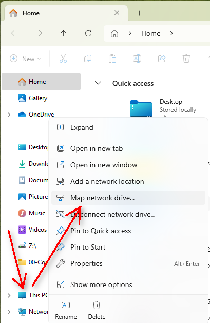
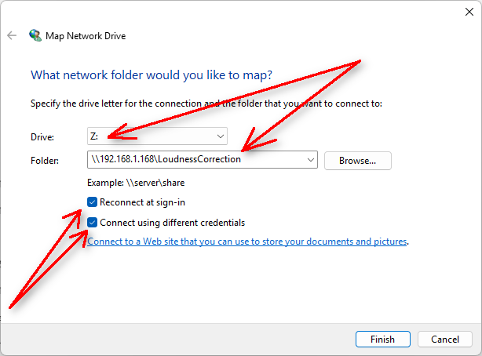
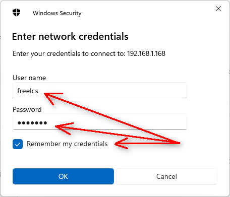

Username and Password authentication for windows 10 and 11
Windows 10 and windows 11 24H2 won't let users mount smb - drives without
username and password anymore. This has stirred up quite some trouble for
network attached store (NAS - disk) users and this affects FreeLCS also.
There are two ways to solve this problem. Either enable guest login from
each windows machine again or start to use username and password
authentication in FreeLCS.
Enable insecure guest logon again in windows
In this document microsoft explains why they think this is a beneficial
change and how to enable smb - mount guest login again in windows:
https://learn.microsoft.com/en-us/windows-server/storage/file-server/enable-insecure-guest-logons-smb2-and-smb3?tabs=group-policy
Here is another article about the issue: https://techcommunity.microsoft.com/blog/filecab/accessing-a-third-party-nas-with-smb-in-windows-11-24h2-may-fail/4154300
Username and password authentication for FreeLCS Samba - share
# Samba Configuration File
[global]
workgroup = WORKGROUP
server string = %h server (Samba, LoudnessCorrection)
force create mode = 0777
unix extensions = no
log file = /var/log/samba/log.%m
max log size = 1000
syslog = 0
panic action = /usr/share/samba/panic-action %d
security = user
socket options = TCP_NODELAY
load printers = no
force create mode = 0777
map to guest = never
# username map = /etc/samba/user.map
server min protocol = SMB2
[LoudnessCorrection]
comment = LoudnessCorrection
read only = no
locking = no
path = /mounttipiste/LoudnessCorrection
guest ok = no
browseable = yes
force user = freelcs
- Copy the text above to /etc/samba/smb.conf
- Create user: freelcs with the command: useradd
-M -s /sbin/nologin freelcs
(This will create a username that can't be used to login into Linux)
- Add a password for the user (password may be for example: freelcs)
with the command: passwd freelcs
- Add the user and its password to Samba database with the command: smbpasswd
-a freelcs ( This asks for user
password. If missing you can install smbpasswd with: apt install
samba-common-bin )
- Restart Samba - services: systemctl restart smbd nmbd
Optional configuration
There is a way to configure samba to allow any username when mounting the
share. The user must even then use the password that is configured for the
default samba user in the samba database.
- Follow all the steps above for creating a linux user adding a password
for it and adding the same user to Samba user - database. Then uncomment
the line # username map = /etc/samba/user.map in /etc/samba/smb.conf
- Create an additional config - file: /etc/samba/user.map
and add this line in it:
freelcs = *
Now Samba ignores the username and always assumes the username is: freelcs.
Users can use their own windows usernames but for password they must use
the Samba - users: freelcs password.
Test if the Samba - mount works
In Linux use command: mount -t cifs -o
username=freelcs,password=freelcs //192.168.1.168/LoudnessCorrection/
/mnt/ (Adjust the IP -
address and the last foldername to match your system)
For windows 11 the mount works like this.
- Open windows file explorer and right - click on "This PC"
Select "Map Network Drive" from the menu.

- Write the address of the server in the window. If your
installation has a target loudness different from standard -23 LUFS then
the target loudness is part of the mount path. For example if your
FreeLCS installation has a target loudness of -16 LUFS, then the mount
path is something like: \\192.168.100.109\LoudnessCorrection_-16_LUFS.
Make sure that the option "Reconnect at sign-in" is
tagged, without it windows won't make the mount when windows starts
up. Tag the option "Connect using different credentials".
Click "Finnish".

- Fill in the username and password and optionally tag "Remember
my credentials" if you want windows not to ask for username
and password for the next time.
